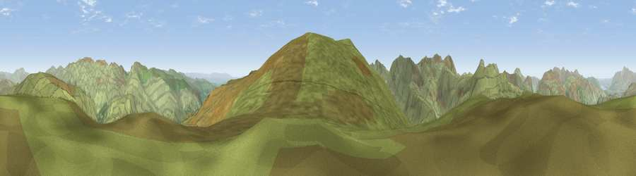

Viewpoint near Borrowdale
#5113 in England · top 33% of its area beats it · near BorrowdaleWhere it is
The exact computed spot (NY 28275 10062). Click the marker for map links.
The view, rendered

A 360° render of this exact spot computed from the terrain model, tree cover and land cover — summer colours, afternoon light, calibrated against photographs of famous viewpoints. Real trees, hedges and buildings will differ in detail.
The panorama
Grey silhouette: terrain skyline in each direction (720 bearings, Earth curvature and refraction included). Dashed green: skyline with trees (+15 m) and buildings (+8 m) as obstacles. Blue strip: how far the ground is visible on each bearing.
Where the view opens
Wedge length = distance to the farthest visible ground on that bearing (vegetation-aware). Rings at 10, 25 and 50 km.
What fills the view
97% grassland · 3% woodland
Angular shares of the visible panorama (visual magnitude), not map area. Landscape diversity 0.06 (0–1 Shannon).
Key numbers
More beautiful places nearby
The staircase of upgrades: each row has a higher view potential than everything closer. Driving times are estimates from straight-line distance, calibrated against real road routing — check an actual route before setting out.
| Place | Direction | Drive | Score |
|---|---|---|---|
| High Raise | SSW · 1 km | ~2 min | 76.2 |
| Glaramara | W · 4 km | ~9 min | 79.8 |
| Bowfell North Top | SW · 5 km | ~11 min | 81.5 |
| Viewpoint c10128_6489 | SW · 5 km | ~11 min | 82.7 |
| Broad Crag | WSW · 7 km | ~14 min | 83.1 |
| Great Gable | W · 7 km | ~15 min | 83.8 |
| Scafell Pike | WSW · 7 km | ~15 min | 83.9 |
| Viewpoint near Legburthwaite | NE · 7 km | ~15 min | 84.5 |
54.48082, -3.10851 · source: screening · position refined by local search. Computed location — check access rights before visiting.